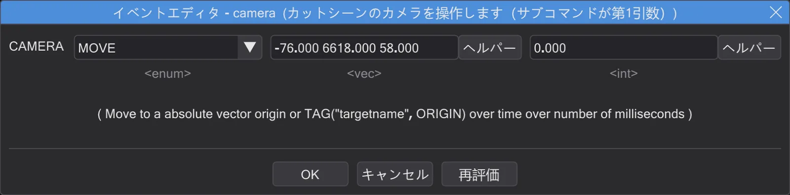

スクリプト
スクリプトを書く
ICARUS スクリプトはコマンドのツリーです。一覧からコマンドを選び、正しいブロックに入れ、値を入力します。

スクリプトの構造#
コマンドは上から下へ実行されます。affect ( "名前", FLUSH ) { ... } は中のコマンドを 1 つのキャラクターやエンティティに送ります。カットシーンはこうして役者を動かします。task はコマンドのまとまりを宣言し、do で並行して開始し、dowait でその完了を待ち、wait は一時停止します。if・else・loop は他の言語と同じです。コマンドを含められるのは affect・task・if・else・loop だけです。
コマンドを追加する#
- 左の イベント 一覧でコマンドをダブルクリックすると、選択中の行の後ろ(または選択中のブロックの中)に挿入されます。
- またはツリーへドラッグします。離した位置で、行の前・中・後ろのどこに入るかが決まります。
- 一覧の最後にあるマクロは複数のコマンドを一度に挿入します。マクロを畳む で 1 行にまとめて表示します。
- 行を右クリックすると、同じ一覧がサブメニューとして表示され、編集・コピー・類似を検索 も使えます。
イベントエディター#
行をダブルクリック(または Enter)すると イベントエディタ が開きます。上にコマンドのヘルプ、下に値ごとの欄があります。固定の選択肢はリスト、数値とテキストの欄、ファイル欄には参照用の と、サウンド再生やスクリプトを開く 再生 があります。マップを読み込んでいれば、名前欄の横の矢印でマップから名前を選べます。

- 式！ で欄を自由な式にし、ヘルパー で Get・Tag・Rnd を使って
get ( ... )・tag ( ... )・random ( ... )を作ります。戻す で戻します。 - リストにない値も使えます(MOD は独自の値を持ちます)が、不明と表示されます。たいていは入力ミスだからです。
- OK(Enter)で値を書き込み、キャンセル(Esc)で破棄、再評価 で既定値に戻します。
選択・移動・コピー#
- クリックで 1 行選択、Ctrl+クリックで追加、Shift+クリックで範囲選択。すべての操作は選択中のもの全体に作用します。
- 行をドラッグすると移動します。ブロックは中身ごと動き、自分自身の中には入れられません。
- コピー・切り取り・貼り付け。ブロックとその中の行を一緒にコピーした場合でも、ブロックへの貼り付けでコマンドは 1 回だけ入ります。
- 複製 は直下にコピーを挿入、コメント化 は行をコメント化/解除、削除 は削除します。
- 元に戻すとやり直しはすべての手順を記憶します。どちらかを右クリックすると全履歴が表示され、1 つの手順だけを取り消して後の変更を残すこともできます。
検索・置換・ブックマーク#
検索(Ctrl+F)は開いたままのウィンドウを開きます。コマンド名(名前が)や値(次を含む)で検索し、F3 / Shift+F3 で移動し、このスクリプトまたは開いているすべてで置換できます。ブックマークは Notepad++ と同じく Ctrl+F2 で設定、F2 で次へ。ファイルごとに保存されます。
変更マージン#
表示 → 変更履歴（余白） を有効にすると、色付きのマージンが変更箇所を示します。オレンジ = 変更・未保存、緑 = 変更・保存済み、青 = 元に戻った状態。マウスを乗せると元の行が表示され、行を右クリック → 元に戻す でそのコマンドだけを復元できます。